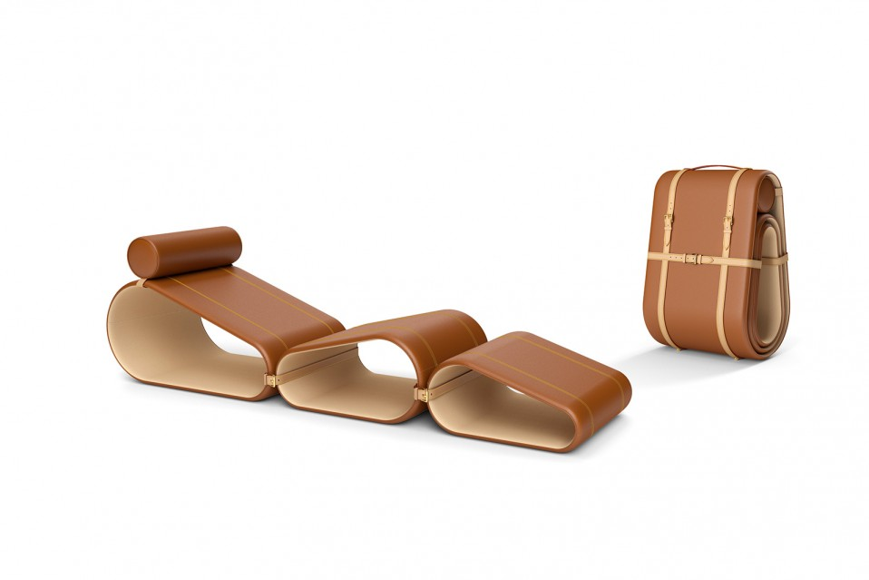
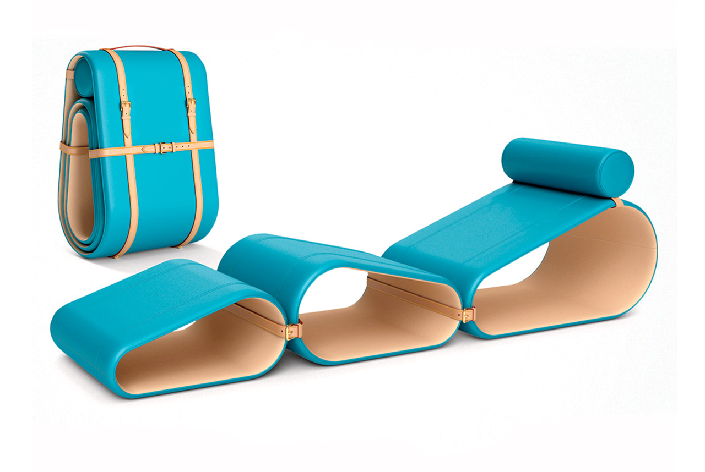

Louis Vuitton presenta la Chaise Longue in occasione del Salone del Mobile, progettata dal designer olandese Marcel Wanders, arricchendo la collezione Objets Nomades.
I tre moduli indipendenti che compongono questa “oasi del relax”, si incastrano come un puzzle dando vita a tre sedute diverse: una chaise longue, una poltrona o un pouf. Ciascun modulo e' costruito in fibra di carbonio high-tech, al fine di essere estremamente resistente ma al contempo leggero, ricoperto da morbida e lussuosa pelle Nomade all'esterno e rifinito in suede all'interno. Le cinghie che collegano i moduli l'uno con l'altro, sia quando la seduta e' chiusa o aperta, sono un chiaro richiamo agli iconici oggetti da viaggio di Louis Vuitton e sono realizzate in cuoio naturale.

